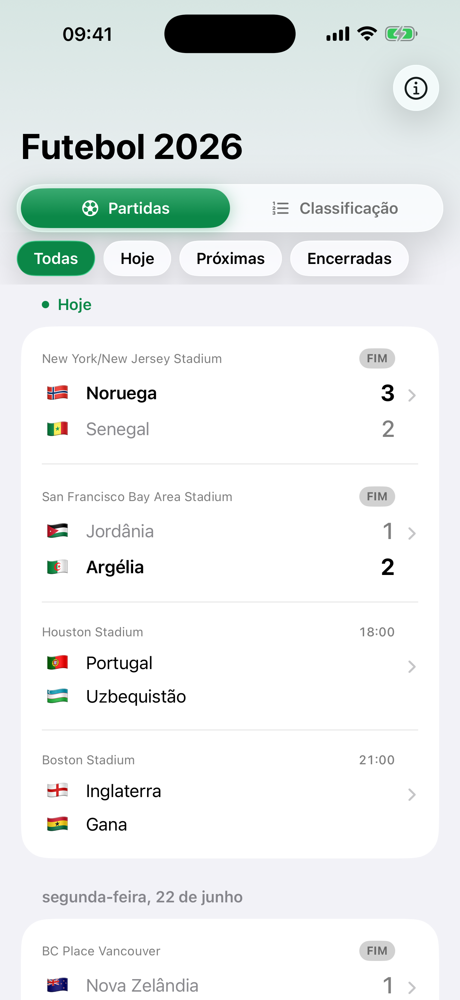
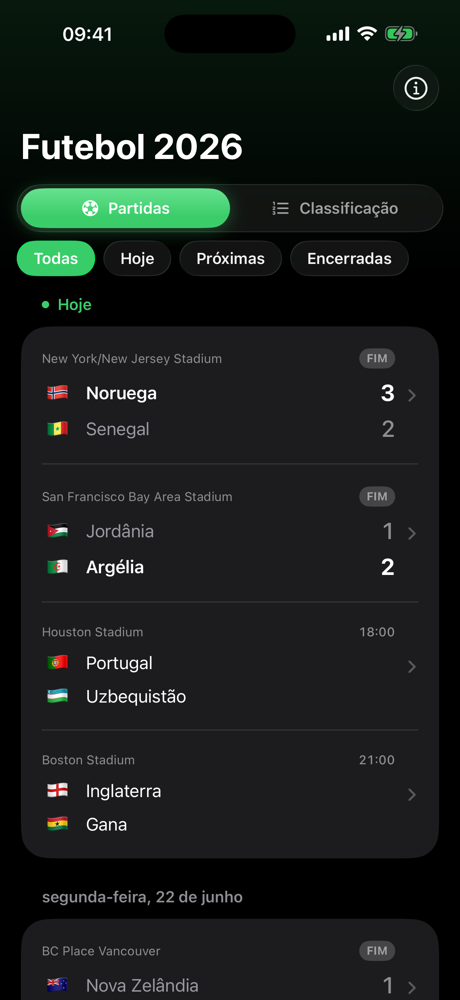
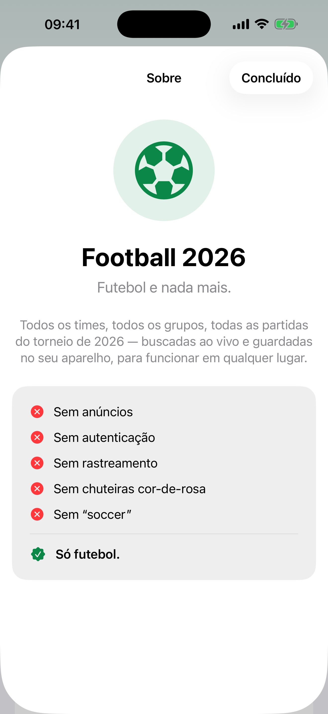
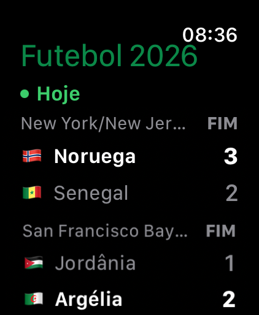

Ao vivo desde o apito inicial
As partidas são sinalizadas no instante em que começam, com o cronômetro do jogo correndo e o placar final assim que o árbitro apita. Os jogos ao vivo sobem para o topo.
O torneio de 2026, nada mais.
Todas as 48 seleções. Todos os 12 grupos. Cada uma das 104 partidas — da primeira bola rolando à final. Ao vivo no seu iPhone e Apple Watch.
Sem anúncios. Sem contas. Sem rastreamento. Só futebol.

Feito para o único torneio que importa neste ano.
As partidas são sinalizadas no instante em que começam, com o cronômetro do jogo correndo e o placar final assim que o árbitro apita. Os jogos ao vivo sobem para o topo.
Placares e gols ao vivo se atualizam sozinhos enquanto a partida acontece. Sem puxar para atualizar, sem espera.
Toque em qualquer partida para ver a linha do tempo completa — autor do gol, minuto e marcações de pênalti ou gol contra — em todas as fases, da fase de grupos à final.
Cada início de jogo aparece no seu horário local. As partidas são agrupadas por dia, hoje fica fixado no topo e os dias encerrados aparecem do mais recente ao mais antigo.
Três tamanhos — bandeira, código do país e placar por seleção. Acompanhe os jogos de hoje ou uma seleção que você ama, com a letra do grupo durante a fase de grupos. Eles se atualizam sozinhos.
Acompanhe uma partida em andamento direto da Tela Bloqueada e da Ilha Dinâmica, com o placar ao vivo e o cronômetro do jogo. Toque para ir direto à partida.
A tabela completa fica no seu aparelho e se atualiza quando você abre o app — pronta mesmo quando o sinal não está.
Um seletor de seções e chips de filtro que combinam perfeitamente com o iOS 26. Modo claro e escuro, em inglês e português do Brasil.
iPhone, Apple Watch, a Tela de Início e a Tela Bloqueada.




O Just Football não coleta nada. Sem analytics, sem rastreamento, sem SDKs de terceiros, sem conta para criar. O app só baixa a tabela pública do torneio e a guarda no seu aparelho.
“Sem anúncios. Sem autenticação. Sem rastreamento. Sem chuteiras cor-de-rosa. Sem ‘soccer’. Só futebol.”
Leia a política de privacidade →Grátis na App Store. iPhone e Apple Watch.
Baixar na App Store